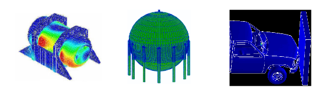
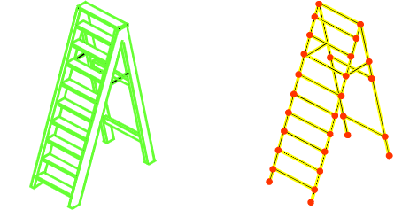
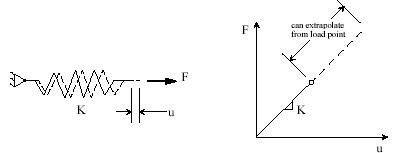

ANSYS is a sophisticated and comprehensive finite element program. It has capabilities in many different physics fields such as static structural, nonlinear, thermal, implicit and explicit dynamics, fluid flow, electromagnetics, and electric field analysis (Fig. 1.1). Obviously because ANSYS is a huge program with so many capabilities it is impossible to cover everything in this small book. This book will give an introduction as to how the ANSYS program works and how these basic skills will be applicable to any type of analysis within ANSYS. The most important concepts in using ANSYS will be addressed here in a compressed format. The key to becoming productive in any computer aided engineering program is to start to think like the program thinks, to get the big picture of how it works in general.

Fig. 1.1 Some applications of ANSYS
ANSYS is an integrated program with all operations performed under one Graphic User Interface, GUI. Creating the model, running it, and postprocessing the results are all done without leaving the ANSYS environment.
There are many different ways of working within ANSYS. Like every software, ANSYS is driven by commands. It gives easy access to these commands. These commands are simple to use; just a keyword followed by several arguments.
New ANSYS users generally don’t use scripting to start with and just want to find out how to do what they want within the GUI environment. That’s where this book starts as well. Each key concept is explained as briefly as possible.
1.1 Finite Element Method
It is very helpful to an engineer using ANSYS to have at least some idea of how the finite element method (FEM) works. What happens internally when ANSYS is told to Solve? Many terms associated with finite element modeling in general heard over and over again are based on the common numerical algorithms. After all, the finite element method is purely a mathematical technique.
The FEM was developed more by engineers during the 1950s and 1960s using physical insight than by mathematicians using abstract methods. The underlying theory is over 100 years old. It was the basis for pen-and-paper calculations in the evaluation of suspension bridges and steam boilers. It was first applied to problems of stress analysis. In all applications the analyst seeks to calculate a field quantity: in stress analysis it is the displacement field or the stress field; in thermal analysis it is the temperature field or the heat flux; in fluid flow it is the stream function or the velocity potential function; and so on. Results of greatest interest are usually peak values of either the field quantity or its gradients. The FE method is a way of getting a numerical solution to a specific problem. An FE analysis does not produce a formula as a solution, nor does it solve a class of problems. Also, the solution is approximate unless the problem is so simple that a convenient exact formula is already available.
When there is a structure like a simply supported beam, it’s easy enough to grab an engineering handbook or textbook and look up the equations needed to calculate the bending moments and displacements. However if there is a structure that is even just a little more complicated, like a stepladder (Fig. 1.2) for example, one will not be able to go to the engineering handbook and look up the stepladder equation. Sure, it’s possible to derive some governing equation(s) for the stepladder but this might be a lot of trouble. For even more complex structures it quickly becomes impossible to do so.

Fig. 1.2 A Stepladder and its FE Model
This is where the finite element technique comes in. In this method an arbitrarily complex structure that cannot be described with an equation is broken down into small pieces, each of which is simple enough on its own that it can be described with an equation. While the actual structure theoretically contains an infinite number of small pieces it could be broken down into, this method breaks it down into a finite number of pieces of a specific size that analyst can choose. The smaller the pieces, the closer the approximation is to reality. Then the response of the entire structure is calculated by essentially summing up the response of each little piece. These small pieces are called elements, and each element is connected to its neighbor by nodes at each of its vertices.
More and more these days solid part is meshed to create nodes and elements. It’s important to realize that the solid CAD part is not the finite element model; it is just a vehicle used to tell ANSYS where analyst wants the nodes and elements to go. The finite element method works only with the nodes and elements.
The FE method involves cutting a structure into several elements (pieces of the structure), describing the behavior of each element in a simple way, and then connecting elements together again. This process results in a set of simultaneous algebraic equations. In stress analysis these equations are equilibrium equations of the connection points. There may be several hundred or several thousand such equations, which means that computer implementation is mandatory. A more sophisticated description of the FE method regards it as piecewise polynomial interpolation. That is, over an element, a field quantity such as displacement is interpolated from values of the field quantity at the connection points. By connecting elements together, the field quantity becomes interpolated over the entire structure in piecewise fashion, by as many polynomial expressions as there are elements. The best values of the field quantity at the connection points are those that minimize some function such as total energy. The minimization process generates a set of simultaneous algebraic equations for values of the field quantity at the connection points.
The power of the FE method is its versatility. The object analyzed may have arbitrary shape, arbitrary supports and arbitrary loads. Such generality does not exist in classical analytical methods. For example, temperature-induced stresses are difficult to analyze with classical methods, even when the structure geometry and the temperature field are both simple. The FE method treats thermal stresses as easily as stresses induced by mechanical load, and the temperature distribution itself can be calculated by FE.
The theory of FE includes matrix manipulations, numerical integration, equation solving, and other procedures carried out automatically by commercial software. The analyst may see only hints of these procedures as the software processes data. The analyst deals mainly with preprocessing (describing loads, supports, materials, and generating the FE mesh) and postprocessing (sorting output, listing and plotting of results).
There are various levels of engineering abstraction built into different kinds of elements. A solid element is fully defined by its geometry in 3D space (think of it as a small block cut out of the part), while shells (also called plates) are idealized by a surface and so need a thickness to be assigned for them to fully understand what they are. A beam element is a further abstraction. A simple line between two points defines it geometrically, and so analyst has to supply its area, moment of inertia, torsional stiffness, etc.
All of the basic calculations in the finite element method are performed at the nodes. What happens inside an element between the nodes is controlled by the element shape function. This is an assumed distribution of the primary variable and can be linear, quadratic, cubic, etc. For structural analysis the primary variable is the displacement and is also called the degree of freedom (DOF). A general three dimensional structural model has six degrees of freedom at each node, translations in the X, Y and Z directions, and rotations about those three axes. For a thermal analysis the degrees of freedom are the temperatures at each node.
The fundamental equation of the finite element method is [K]{ u} = { F}, where [K] is the stiffness matrix, {u} is the displacement vector, and {F} is the applied load vector. This is analogous to a simple spring (Fig. 1.3) that obeys Hooke’s Law (stress = Young’s modulus x strain), and is the essence of “small deflection theory”, or linear analysis. Small deflection theory means that the displacement calculated for the applied load can be extrapolated to any value of load, and that the stiffness of the structure does not change for any value of applied load. Strictly speaking, this assumption is never exactly true, but for a very large class of analyses it has traditionally been considered good enough.

Fig. 1.3